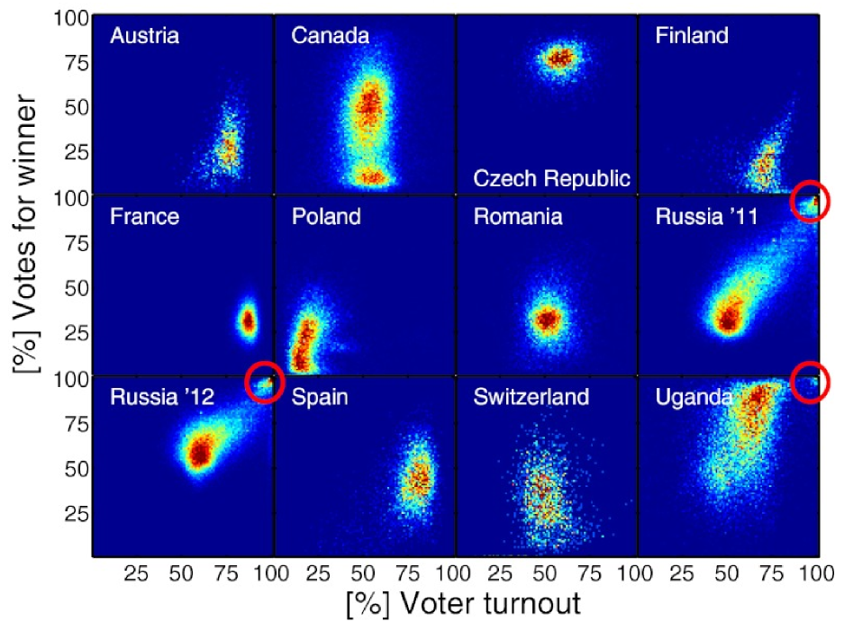
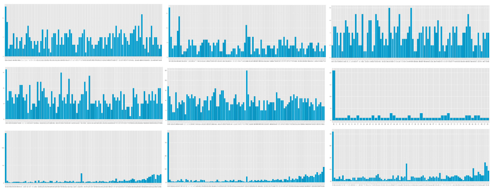

What Happened in the Afghanistan Elections?
On Sunday, the two men running for President of Afghanistan--Dr. Abdullah and Dr. Ashraf Ghani--agreed to a full audit of recent runoff elections, temporarily addressing a growing political crisis stemming from a lack of public confidence in the election results announced by the IEC last week.
Concern over election fraud is warranted. Previous presidential elections in 2009 were characterized by blatant ballot box stuffing that clearly impacted the outcome. In 2014, the story is more complicated. Election fraud occured using somewhat more sophisticated tactics that require greater scrutiny. Our analysis of the results at all 22,399 polling stations suggests that this was a close election. A full audit is indeed necessary to determine the will of the people.
Who voted?
One area of controversy is the overall turnout. In April 6,645,384 Afghans voted in presidential and provincial council elections, defying threats of Taliban violence to set a record turnout. The presidential runoff saw an incredible jump in turnout. Nearly 1.3 million more ballots (7,947,527) were cast in June polls.
But that doesn't fully reflect the shift in turnout as many areas actually saw a decrease in total votes. Almost 45% of polling centers had a decrease of nearly a million votes from the runoff (~950k) while the polling centers which had increased turnout saw an average increase of 680 voters per polling center. These polling stations contributed an additional 2,282,726 votes in comparison with the first round. These new votes were responsible for a significant swing in the outcome, in which Ashraf Ghani went from trailing Abdullah by nearly one million votes in the preliminary elections to leading by one million votes in the runoff elections.
Who are these 2.3 million new voters? Certainly there were areas that saw legitimate increases in voter turnout. There are also reports that Ashraf Ghani made deals with tribal and religious leaders that gave them strong incentives to drive voters to the polls. Undoubtedly there was also widespread vote fraud.
Identifying Fraud
We examine the degree and impact of potential election fraud by comparing the results to the population and by looking for statistical anomalies in the results.
Comparisons to population
According to Afghanistan's Central Statistics Office, there are 3,400 people in Warmamy district. Nationally, more than half of Afghans are under voting age. So anything approaching 1,700 votes from Warmamy district would be extraordinary and yet the IEC reports over 23,000 votes from that district.
Twenty-one districts reported more votes than the estimated population. These districts are in the provinces of Paktika, Paktya, Khost, Nooristan, Kunar, Kandahar, Panjsher, and Logar--areas that voted heavily for Ashraf Ghani. An additional 50 districts reported more that 60% of residents voted, well over the expected voting age population.
- <60%
- 60-70%
- 70-80%
- 80-90%
- 90-100%
- 100-110%
- >110%
Districts with significant increases from April turnout are much more likely to have runoff turnout numbers greater than the population. More than 500,000 votes came from districts with more votes than people and 1.85 million votes came from districts where more than 60% of the population voted.
To analyze the overall impact of excessive turnout we utilized the technique of election fingerprinting. From the paper, "Statistical detection of systematic election irregularities":
"Election fingerprints are two-dimensional histograms of the number of units for a given voter turnout (x axis) and the percentage of votes (y axis) for the winning party (or candidate)"
Here are some examples from other elections:
 Fig. 1 from "Statistical detection of systematic election irregularities"Because Afghanistan voters aren't assigned to a particular polling station we can't produce a detailed fingerprint at the polling station level. We can still produce a rough fingerprint by looking at the data at the district level. To calculate voter turnout, we assumed that vote totals above 60% of the district population represented 100% turnout and scaled accordingly.
Here is the election fingerprint for Afghanistan 2014 showing voter turnout (votes/population) along the x-axis, % of votes for Ashraf Ghani along the y-axis, and colors closer to red indicating more districts reporting those results.
Even though it's low resolution, there is a visible correlation between high turnout areas and votes for Ashraf Ghani.
Statistical anomalies in vote distributions
Gian District in Paktika province provides a stark example of the statistical anomalies present in this election. Here are the results from all twelve polling centers in Gian District:
| Ashraf Ghani | 2400 | 1800 | 1800 | 1800 | 3000 | 1800 | 1800 | 1200 | 1189 | 2400 | 1699 | 1800 |
|---|---|---|---|---|---|---|---|---|---|---|---|---|
| Abdullah | 0 | 0 | 0 | 0 | 0 | 0 | 0 | 0 | 11 | 0 | 0 | 0 |
Not only does Abdullah receive zero votes at most centers, the vote totals for Ashraf Ghani are almost all multiples of 600, the amount issued to each polling station. In Gian district, almost every ballot was cast and nearly all for Ashraf Ghani.
Abnormal distributions of vote counts can provide insight into identifying fraudulent provincial results. Here are the vote count distributions for all polling stations in Kabul, Nangarhar, and Herat (the biggest three provinces) as a baseline:
There are also density functions shown as overlays to allow for easier comparisons. There are several provinces that have distributions which are very different from the rest of the country: very few small vote counts and most polling stations using all or nearly all of the 600 ballots.
Here are the density functions for each province with Khost, Kunar, Logar, Paktika, Paktya, and Wardak highlighted.
Abdullah Votes:
Ashraf Ghani Votes:
Fabricated vote totals
In large numbers, the last two digits of vote counts should be relatively evenly distributed. Graphing the last two digits of every vote total submitted by the 22,399 polling stations shows a significant number of polling stations with vote totals ending in 00 or 50. Here is the distribution at the national level:
We also observe this effect at the provincial level. In Nooristan province, there were 18 polling centers (of a total 137) where both candidates had a vote count which was a multiple of fifty. We should expect only three under an even distributions. Thirteen were Abdullah victories of which nine were 500-100.
 From top left: Baghlan, Ghazni, Jawzjan, Kandahar, Nangarhar, Nooristan, Paktika, Paktya, and Wardak.
These cases suggest instances where vote totals are either being estimated or made up. Here are the locations across the country where both candidates' vote count ends in 00/50 or one candidate's vote count is exactly 500 or 550 (blue dots indicate Ashraf Ghani had more votes at a polling center, red for Abdullah).
These polling stations contributed over 60,000 votes to the final tally.
Fraud impact
In 2009, election authorities used a rough criteria for identifying polling station as suspicious: all stations that returned 600 votes and over 95% were for one candidate were flagged. Expecting similar scrutiny, some Afghans were more careful in their manipulation of results. In this election, that criteria would invalidate a little over 400,000 votes (87% Ashraf Ghani). To determine a better estimate for how many votes should be "quarantined", we combined the results of the tests above, flagging polling stations for three reasons:- Digit Analysis: All polling stations where both candidates had a vote count ending in "00" or "50" (excluding 600/0) or if one candidate had exactly 500 or 550 votes
- Voter Turnout: In districts with greater than 60% turnout compared to the population, we flagged all polling stations with greater than 550 votes and 95% for one candidate
- 2009 Criteria: We repeated the 2009 fraudulent polling criteria
Here's how many votes from each candidate were flagged with the above procedure. Note that the columns will not sum to the total because of overlap between the flags.
| Digit Analysis | Voter Turnout | 2009 Criteria | Total Quarantined | |
|---|---|---|---|---|
| Ashraf Ghani | 33,895 | 796,586 | 365,592 | 1,006,713 |
| Abdullah | 28,569 | 85,393 | 53,208 | 186,295 |
| Total Votes | 62,464 | 881,979 | 418,800 | 1,193,008 |
| Polling Stations | 113 | 1,486 | 698 | 2,013 |
Excluding the votes from "quarantined" polling stations reveals an extremely close election. Ashraf Ghani leads non-"quarantined" stations by a much narrower margin of 3,479,175 - 3,275,344. A full review of all stations is warranted to determine which reflect legitimate votes. Only a full and thorough audit can ensure a quality process which reflects the confidence that Afghans have invested in it by voting in such large numbers. If a proper audit is conducted, Afghans should be prepared for a result that looks very different from either the initial runoff results announced by the IEC, which significantly favored Ashraf Ghani, or the results from the first round elections which significantly favored Abdullah.
Note: An earlier version of this article stated that the district providing "a stark example of the statistical anomalies in this election" was Nika, Paktika (IEC ID 1213) but it has been corrected to Gian, Paktika (IEC ID 1215). The article has also been corrected to state that 21 districts, not 25, reported more votes than CSO estimated population.
Development Seed is based in Washington, DC.
Drew Bollinger is a developer at Development Seed.
Ian Schuler is the CEO of Development Seed.
Examine our code and data on GitHub.
Photo credit: Lorenzo Tugnoli for UNDP ELECT. UNDPAF All Rights Reserved.